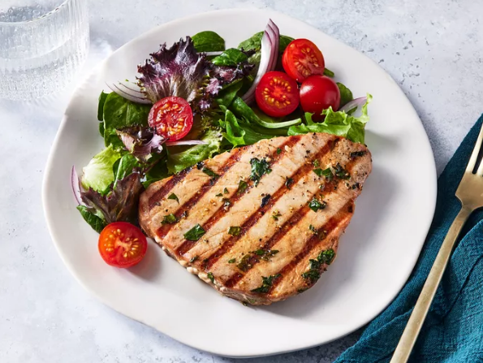

Marinated Tuna Steak

Tuna steak served with salad
Description
This tuna steak recipe uses a tangy marinade made with orange juice, soy sauce, and garlic for a wonderful taste.
Ingredients
- 2 Tuna steaks
- Marinade (see ingredients below)
- Side dish (salad / veggies)
Tuna Steak Marinade
- Orange juice
- Soy sauce
- Olive oil
- Fresh parsley, oregano and garlic
- Lemon juice
- Black pepper
Steps
- Make the marinade.
- Marinate the tuna steaks.
- Grill the marinated tuna steaks, basting often, to desired doneness.
- Serve with side dish.